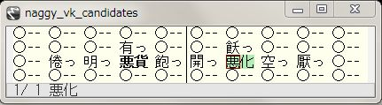

quail-naggy.el: 単漢字変換 Input Method for Emacs.
■About the "quail-naggy.el"
Windows 用単漢字変換日本語 IME 『風』の実用性とアイデアを受け、将来的に非 Windows 環境や IME 非対応の Windows 用 Emacs でも『風』のようなインプット・メソッドが使えるようにしておこうとして開発されたのが本ソフトである。
quail-naggy.el 本体は、仮想鍵盤の表示がメインで、変換時の辞書引きなどには、同梱の naggy-backend.pl という Perl プログラムをバックエンドとして使っている。
quail-naggy.el 自体は、Emacs に付属している quail/japanese.el と kkc.el を大いに参考にして作った。また、随分前に私自身が作ってほぼ身内でのみ配布した vkegg.el も参考にしている。
バックエンドを使うこともあり、インストールが複雑なのが本ソフトの弱点である。また、Emacs のバージョンの違いによる表示の差も設定を難しくする要因となる。
本ドキュメントでは、その難しいインストール作業をまず説明し、次いで操作方法を説明する。
■インストール方法
インストール方法の大枠は次の通りである。
●naggy-backend.pl で使用する Perl モジュールのインストール。
●Emacs-Lisp ディレクトリ上へのファイルの展開。
●SKK-JISYO.L や tankanji.txt や emoji-skk-dic.txt などの変換用辞書の入手＆インデックス・データベースファイルの作成。
●naggy-backend.pl の設定。
●.emacs の設定。
順に説明していこう。
●naggy-backend.pl で使用する Perl モジュールのインストール。
naggy-backend.pl ではデフォルトでインストールされていない Perl モジュールはほとんど使っていないが、日本語関連の一つとデバッグ用の一つの計二つのモジュールだけは別途インストールする必要があるだろう。
その二つは Unicode::Japanese と autovivification である。
なお、バージョン 0.04 までは Encode::JIS2K も必要だった。
問題があった Encode::JIS2K は、コンパイルがうまくいかない環境があるようだ。Windows の標準的な Perl である ActivePerl がその例である。 2015-10-16 現在、ActivePerl で "ppm install Encode::JIS2K" としてもエラーが返るだけである。
実は Encode::JIS2K と似た機能のモジュールとして Encode::JISX0213 モジュールがあり、代わりに利用できるはずである。ただし、これも ActivePerl において "ppm install Encode-JISX0213" が成功するのに、うまく使えなかった。そのため、そちらに対応するコードは書かなかった。が、それがうまく入る環境では、各種 .pl ファイル内の "require Encode::JIS2K" を "require Encode::JISX0213"に変えるだけでうまく機能するはずである。
バージョン 0.05 からは Encode::JIS2K が多くの環境で必要なくなった。 Encode モジュールはバージョン 1.64 から、デフォルトで euc-jp を指定すると euc-jisx0213 の内容をデコードできるため、euc-jisx0213 を使っているところを euc-jp に変えた。万一、euc-jp でなく euc-jisx0213 が必要な環境の場合は、make_skk_dic_db.pl make_tankanji_dic_sdb.pl naggy-backend.plの起動時に --jisx0213 オプションを付ければ euc-jisx0213 を使って従来どおりの動作をする。(ただし、このオプションは obsolete。)
著者は Cygwin の Perl 5.10.1 で動作確認をしている。
●Emacs-Lisp ディレクトリ上へのファイルの展開。
Unix 環境であれば /usr/share/emacs/site-lisp にこのアーカイブを展開した quail-naggy/ ディレクトリを置けばいい。ドキュメントなどもそのままコピーしておいたほうがいいだろう。
●SKK-JISYO.L や tankanji.txt などの変換用辞書の入手＆インデックス・データベースファイルの作成。
単漢字変換辞書は、例えば↓から持って来れる。が、『風』の所有者にできれば限定しておきたい。
《まさか!の単漢字入力。IME『風』 [ JRF の勝手に PR ]》
《jrf_tankanji-20120505.zip》
『風』の所有者ならば、もしかすると、『風』の辞書をテキストに変換して使ってよいと考えるかもしれない。一応 dic2txt.pl というそのためのスクリプトを用意したが、詳しくはそのソースを読んで欲しい。
単漢字変換辞書の形式は、行が #YOMI:ナニカ で始まるところから次の #YOMI までが一単位で、そこに半角スペース２つか "!-" で区切られた単漢字が 10文字分が四行で、40字分を一ページとして数ページ分が含まれるのが続くファイルである。行頭が #YOMI 以外の # で始まる行は無視される。
quail-naggy.el では、変換時の候補のしぼりこみに SKK 用の単語辞書を使う。また、単に単漢字変換だけでなく指定すれば SKK 辞書を使った単語変換もできるので、SKK 辞書を手に入れたほうがよい。↓から SKK-JISYO.L をダウンロードする。ダウンロードしたものは gzip がかけられていると思うので gunzip しておく。
《SKK辞書 - SKK辞書Wiki》
絵文字を「＠＠よみ」などで入力して使うための辞書も用意する。元が MIT License のため、quail-naggyのアーカイブには入れていない。naggy-emoji-skk-dic.zip のアーカイブまたは↓などから、emoji-skk-dic.txt と emoji-skk-dic.txt.sdb.pag と emoji-skk-dic.txt.sdb.dir をダウンロードする。
《GitHub - JRF-2018/naggy-emoji-skk-dic》
手に入れた tankanji.txt と SKK-JISYO.L と emoji-skk-dic.txt と emoji-skk-dic.txt.sdb.pag と emoji-skk-dic.txt.sdb.dir を先にファイルをインストールした quiail-naggy/ に置く。ここで、辞書のロードに時間をくわないように、インデックス・データベースファイルを作っておく必要がある。
# perl make_skk_dic_db.pl -e SKK-JISYO.L
# perl make_tankanji_dic_db.pl -e tankanji.txt
…とする。オプションの -e は euc-jisx0213 を使うという意味で、tankanji.txt が sjis の場合は -s を指定すれば良い。-u とすれば、utf8 になる。
これで、SKK-JISYO.L.sdb.pag , SKK-JISYO.L.sdb.dir , tankanji.txt.sdb.pag , tankanji.txt.sdb.dir ができるはずである。
ファイルをインストールしたときに付いてきた bushu-skk-dic.txt も SKK 辞書で部首変換に使う。「＠き」などとして木へんの部首の単漢字が引ける。これもインデックス・データベースファイルを作る必要がある。
# perl make_skk_dic_db.pl -e bushu-skk-dic.txt
これで、bushu-skk-dic.txt.sdb.pag , bushu-skk-dic.txt.sdb.dir ができるはずである。
●naggy-backend.pl の設定。
naggy-backend.pl はそれが起動したディレクトリからデータを読む設定になっている。最初に site-init.nginit というファイルを読む。これを記述する必要がある。これまでのファイル名で辞書を作ったら、次のようなファイルにすればいい。
load-init-file default-init.nginit
set-tankanji-dic tankanji.txt -e
add-skk-dic SKK-JISYO.L -e
add-skk-dic bushu-skk-dic.txt -e
add-skk-dic emoji-skk-dic.txt -u
ここでも -e は文字コードに euc-jisx0213 を指定するためのオプションで、-u は utf-8、この二番目の引き数の位置になければならない。tankanji.txt が sjis であれば、-s を指定する。
naggy-backend.pl では、付属の alpha-hwkana.trl と simple_hebrew.trl を読み込んで使用する。それらは特に設定の必要はない。
●.emacs の設定。
やっと、.emacs の設定である。.emacs には quail-naggy/ を置いたディレクトリについて、次のように書く。
;;
;; Naggy
;;
(setq load-path
(append load-path (list "/usr/share/emacs/site-lisp/quail-naggy")))
(require 'quail-naggy)
(setq naggy-backend-program "/usr/bin/perl")
(setq naggy-backend-options
'("/usr/share/emacs/site-lisp/quail-naggy/naggy-backend.pl"))
(setq default-input-method "japanese-naggy")
(if (>= (string-to-number emacs-version) 24.5)
(progn
(setq naggy-vk-split-window-length 7)
(setq naggy-vk-frame-length 7)))
最後の naggy-vk-split-window-length と naggy-vk-frame-length の設定は、 Emacs のウィンドウに候補を表示するとき作るウィンドウの高さを指定する。経験によると、ftp.gnu.org の /gnu/emacs/windows/ から取ってきた Emacs 24.5 はこの設定ないと候補が 4行表示されるべきところで 3行しか表示されなかった。一方、gnupack の Emacs 23.3 では必要なかった。
これで C-\ を置せば quail-naggy が起動するはずである。
■操作方法
何かを(ローマ字で)入力したあとに、それを平仮名としてまたは片仮名としてまたは漢字として確定するかをキーで指定するというのが変換の流れになる。
そのため、入力中は、他の Input Method のようにひらがなが表示されるのではなく、半角英字のローマ字読みが表示される。
そのまま英字として確定するときは return を押せば良い。ひらがなで確定するときは「無変換」キーを押し、カタカナで確定するときは「変換」キーを押す。半角カタカナで確定するときは Shift + 「変換」キーを押す。全角英数字を出したいときは tab を押す。だいたいそのようにキー設定してある。
ただし、109キーボードではなく 101キーボードにも使えるよう M-tab または S-return でひらがな確定、S-tab でカタカナ確定をできるようにしてあるが、それは標準的なキー操作ではないという認識が作者にはある。
なお、Emacs はこれまで「無変換」キーや「変換」キーの Elisp 用キーシンボルをたびたび変えてきた。一応、私が知ってる範囲でそれらのシンボルにもキー割り当てをしているが、将来的にまた変えられたら、quail-naggy.el の該当部分をいじって対応して欲しい。どのようなキーシンボルが割り当てられているかは、M-x describe-key をして調べれば良い。
単漢字変換はローマ字の文字列入力後にスペースキーを押すことで行う。候補ウィンドウが表示され、そこに 40 個の候補が並ぶ。それらはキーボード上の一つのキーにマッピングされる。さらにスペースを押すとページをめくって次の候補群を表示する。
単漢字変換モードに入ってからも、「無変換」キーでひらがな確定、「変換」キーでカタカナ確定ができることに変わりはない。ただ、半角英数で確定するためには C-g で一端キャンセルしてから return する必要がある。
単漢字のしぼり込み検索ということができる。具体的には aka:kou と入力して変換すると、「あか」という読みを持つ漢字のうち「こう」という読みも持つ漢字が highlight して表示される。なお、aka:akeru と入力すると、 SKK-JISYO.L で「あk」の読みを持つ「明ける」があるため、「明」が highlight して表示される。

Akka:bakeru といったように大文字(か @)ではじめた場合、または、:akka:bakeru といったように最初を : ではじめた場合、または、akka:bakeru: といったように最後を : にした場合は、単語変換になり、「あっか」という読みの候補が「ばける」という読みでしぼり込み検索されて、表示される。1文字以上の長さのため、後ろのほうがわからない候補は meta キー+ その候補のキーを押すことで候補を一時的に選択できて、後ろがなんであるかがわかる。
この辺りは『風』の機能よりも拡張されている部分になる。
■方式指定変換 (新機能: 2017-04-29)
操作方法の続き。
スペースを押して変換する際に Abraam#greek などと # のあとに方式を指定した変換ができる。この場合、スペースを押すと仮想鍵盤も表示されることなくΑβρααμ と変換される。上で単語変換を :akka:bakeruなとしたが同様のことが akka:bakeru#j でできる。
指定できる方式には、今のところ 16進数 Unicode 変換の #u、ギリシャ語の #greek、ヘブライ語の #hebrew、アラビア語の #arabic、Latin-1 の #latin、ロシア語の #russian を一応用意している。各言語の知識を私はそれほど持っていないので、暫定的なものと考えていただきたい。詳しい変換テーブルは、酷な要求かもしれないが、trl ディレクトリに入っているファイルを読んで欲しい。
あと、方式には、いちおう単漢字変換の #J、単語変換の #j、ひらがなの #h、カタカナの #k、半角カタカナの #hwkata、英文字全角の #fw もある。(hw は half-width、fw は full-width の略。)
なお、直前に指定した方式で、次も変換したいときは "\e " (meta キー + スペース)を使えばよい。
■単漢字変換を使わず常に単語変換をしたい場合 (新機能: 2020-01-23)
単漢字変換を使わず常に単語変換をしたい場合は、site-init.nginit で add-tankanji-dic をコメントアウトすればいい。または以下の内容の ~/.naggy-backend を作ればよい。
load-init-file site-init.nginit
.if defined FRONT_END
.if ${FRONT_END} == quail-naggy
set DEFAULT_CONVERT skk
.endif
.endif
あまりないことだと思うが、単語変換をデフォルトにした上で、単漢字変換辞書が使いたいときは、:aka:akeru のように最初を : ではじめた入力または aka:akeru: のように最後を : にした入力をすればよい。
■わかっている不具合
『風』は、入力が終ったあととかは、制御キーでバックスペースなどが自由にできる。しかし、quail-naggy.el では、元の quail モードの制限らしく、それができないことがある。確定後に制御キーが使える場合もあり、動作が一定しない。原因は掴めていないが、quail モードの制限と思うので、詳しく調査していない。がまんして使っていただきたい。(注: 2017-04-29 に一部のバグを取ったので改善しているかもしれない。)
ただ、制御キーの前に C-g を押すと、次の制御キーは効くようになるようなので、私はだいたい気にせず使っている。
また、gnupack の Emacs で、Windows の日本語 IME を『風』ではなく、 Windows 標準の Microsoft IME を使っていると、「変換」キーでカタカナ変換をしたあと、変換モードに入ってしまう。これを避けるには、私が標準的でないと思っている、S-tab でカタカナ変換しないといけない。
Windows 7 でこれを避けるもう一つの方法は、IME のツールバーを右クリックで出てくる設定において、追加として日本語キーボードに(Microsoft IME でなく)単なる「日本語」と書かれたものも選択しておき、shift+control などで選んで、その Microsoft IME でない、日本語キーボードを使うというものである。
X Window でこれを避ける方法としては、インプット・メソッドを Emacs で使わないように ~/.Xresources に Emacs.useXIM: off の一文を足さねばならないかもしれない。
Windows 10 でこれを避ける方法として、32bit版 Emacs では DIFE.exe (Disable IME for Emacs) が使える。しかし、64bit版 Emacs では現在のところ使えないようだ(2018年12月28日現在)。
X Window と DIFE.exe については詳しくは↓に書いた。
《Windows 10（…の…）Emacs で quail-naggy.el を使うには、DIFE.exe がほぼ必須のようだ。 - JRF のひとこと》
Windows 64bit版の emacs 26.1 ではしかたなく、私は、Microsoft IME の設定をいじって対応している。具体的には、Windows 10 のタスクバーの「あ」と書いてるところを右クリックして「プロパティ」を選び、そこで「詳細設定」を選ぶと、「Microsft IME の詳細設定」のウィンドウが開く。そこで、「全般」→「編集操作」→「キー設定」→「変更」で、「変換」キーの最初のところを「-」(何もしない)にし、必要なら「SHIFT+変換」キーを「再変換」に割り当てる。…当然、他のソフトも影響するが、メインの日本語入力が私は Emacs なので、しかたなくそうしている。
Windows 10 version 2004 からはさらに IME がバージョンアップしたため、上の方法ではうまくいかなくなっている。Windows の設定で Microsoft IME の設定を開いたあと「全般」→「以前のバージョンの Microsoft IME を使う」をオンにした上で、上のように「プロパティ」「詳細設定」…とやっていく必要があるようだ。
さらに、ときどき、Emacs から perl の起動がうまくいかないことがあった。 Emacs を起動した直後のひらがな確定や単漢字変換のとき、変換すべきローマ字列が消えてしまい、その次に何度か同じように変換したりしてると、変換ができるようになるという現象が、何度かあった。naggy-backend.pl のプロセス用バッファである" *naggy-backend*" を見ると、exit code 5 で異常終了していた。再現性がなくて、原因不明である。
あと、不具合ではないが、naggy モード中は、shift + space で全角スペースが出るように global-set-key してしまっている。それがおいやな方は、 quail-naggy.el の該当部分を消す必要がある。ごめんなさい。
■最後に
最初に書きましたが、このソフトは多くを他の人のアイデアやコードに依っています。その作者の方々に感謝します。
インストールが大変難しいものになってしまいました。それをクリアした上で使ってくださる利用者の方がいれば、その方々にも感謝します。
インストールが難しかったり、まだできたてで動作が安定していなかったり、やろうと思ってできなかった部分が多くあったりしますが、もしかすると遠くの誰かが必要とするかもしれないと思い、公開することにしました。いろいろ致らない部分があるとは思いますが、お許しください。
■License
The author is a Japanese.
I intended this program to be public-domain, but you can treat this program under the (new) BSD-License or under the Artistic License, if it is convenient for you.
Within three months after the release of this program, I especially admit responsibility of efforts for rational requests of correction to this program.
I often have bouts of schizophrenia, but I believe that my intention is legitimately fulfilled.
■ダウンロード
今回の配布物は以下の zip ファイルまたは tar.gz ファイル。更新があれば下のリンクの中身は最新のものに置き変わっているはず。
●quail-naggy.zip
●quail-naggy.tar.gz
●naggy-emoji-skk-dic.zip。(これのみ MIT License。)
GitHub にも登録してあるが、更新は、ここの更新のあと1日から3日遅れるかもしれない。
●《GitHub - JRF-2018/quail-naggy》。
●《GitHub - JRF-2018/naggy-emoji-skk-dic》。
更新：2015-10-16,2015-10-23,2017-04-29,2017-05-23,2018-12-22,2018-12-28,2020-01-23,2020-12-01,2021-02-01,2021-12-24
初公開：2015年10月16日 20:05:52
最新版：2021年12月24日 17:15:29
Comments:
[E:book] 初公開。quail-naggy-20151016.zip。バージョン 0.01。
naggy-backend.pl は jrf_semaphoreで先に技術利用していたから、バージョン 0.03 だけど、一応、quail-naggy.el の 0.01 がこの配布物のバージョンとしておく。
投稿: JRF | 2015-10-16 20:23:55 (JST)
[E:snowboard] 更新: quail-naggy-20151023.zip。バージョン 0.02。
一週間使ってみた。
気付いた部分について修正し、直せない不具合については、わかっている弥縫策と共に上の記事に追記した。修正したのは次の通り。
まず、致命的な欠陥の修正について。ピリオド "." を「。」に変換できてなかったのを修正した。ついでに、naggy-backend.pl に、オプション --punctuation-fullwidth-period を作り「、。」を「，．」で書く人に対応。ただし、「、。」を「、．」で書く人と「，。」で書く人とかにはまだ非対応。希望者があれば考える。
次に、『風』との互換性を高める修正が二つ。一つは、backspace 時、最初のページが表示されていたら、変換をキャンセルするようにした。もう一つは、ひらがな変換やカタカナ変換のとき、? や ! などの記号を半角のまま残すのではなく全角に変換するようにした。
投稿: JRF | 2015-10-23 06:50:43 (JST)
[E:wrench] 更新: quail-naggy-20151113.zip。バージョン 0.03。
naggy-backend.pl では、set-tankanji-dic をしなかった場合にも、一応、対応。
quail-naggy.el では、naggy-vk-up-kouho などを作った。仮想鍵盤上のカーソルの移動についてかなりいじった。
「カーソルの移動」というと簡単な変更のようだが、これが結構、大がかりな変更のため、もしかすると不安定になるかもしれない。その場合は、バージョン 0.02 を使って欲しい。
投稿: JRF | 2015-11-13 08:58:29 (JST)
[E:ring] 更新: quail-naggy-20151115.zip。バージョン 0.04。
単漢字変換のとき、一番最初の候補が 1ページ目に来ないときの動作を修正。
naggy-backend-command で Timeout したときに、エラーを出すようにした。頻繁に Timeout する場合は .emacs で (setq naggy-backend-timeout 30) などとして時間を延長すればいい。
仮想鍵盤上で、マウスで候補を指定できるようにした。mouse-1 で指定。mouse-2 で決定。ただし、できるので試しに作ってみただけで、あまり意味のない、使って欲しくない機能。
前回は、はからずも、13日の金曜日のリリースになってしまっていた。ウィルスチェックなどに(誤認識でも)引っかかったりするのはいやだし、縁起がよくないので早めに次のバージョンをリリースしておいた。
投稿: JRF | 2015-11-15 13:49:15 (JST)
[E:golf] 更新：quail-naggy-20160209.zip。バージョン 0.05。
euc-jisx0213 の代わりに euc-jp を使うようにした。Encode 1.64 以降では、デコードの場合はそれでいいと書いてあって、それでいいというのを確認したため。これで Encode::JIS2K とおさらばできる。
quail-naggy.el はいじってないが、一応わかりやすいようにバージョン番号だけ上げておいた。
投稿: JRF | 2016-02-09 13:31:25 (JST)
[E:clover] 更新：quail-naggy-20170429.zip。バージョン 0.07。
まず上で書いた「方式指定変換」ができるようになった。
次に SKK にならって、大文字で入力した部分で漢字とひらがなを分けることができるようになった。何をいってるかわかりにくいので例を挙げると、kiwotukeru は「気をつける」と「気を付ける」の両方の可能性があるが、後者だけを指定するのに、kiWoTuKeru と入力すればよいとした。(前者だけなら kiWotukeru。)
あと、「風」辞書でよく使っていた .gi などの "." がまじる読みについてうまく変換できなかったのを修正したり、細かなバグ取りも行っている。
ユーザーから見える機能追加は、そんなところだが、内部的には結構大きな変更を行った。naggy-backend.pl はポリシーを持って一個の Perl ファイルにしていたが、ポリシーを曲げてモジュールに分けた。また、変換テーブル trl の読み込みをそれがはじめて使われるときまで遅らせるとともに、その初期化ファイルを充実させたりした。
さらに、quail-naggy.el とは直接関係ないが、同じ naggy-backend.pl の仕組みを共有する jrf_semaphore.pl を同時に更新した。そちらで手旗信号で日本語変換を通信しようとかいう無茶なことをやっている。
あと、ちょっとした手違いで、バージョン 0.06 は抜けてしまった。
投稿: JRF | 2017-04-29 13:34:54 (JST)
[E:art] 更新：quail-naggy-20170523.zip。バージョン 0.07_1。
jrf_semaphore.pl で使う部分でのバグ修正。詳しくはjrf_semaphore.pl の記事のコメントを読んで欲しい。quail-naggy には影響はない。ほとんどファイルはいじっていない。そのため、バージョン番号を上げずにアップデートという行儀の悪いことをしてしまった。
投稿: JRF | 2017-05-23 17:05:10 (JST)
[E:sweat01] 上の記事に Windows 10 で使うには、DIFE.exe を使えばよい旨を書き足した。ドキュメントのためだけに 0.07_1 のアーカイブの更新はしないでおく。
投稿: JRF | 2017-05-23 21:37:35 (JST)
[E:ribbon] 更新：quail-naggy-20170608.zip。バージョン 0.08。
Naggy::TankanjiDic を変更。場合により日本語読み(い や まん)を英語読み(i や man)より優先度を高くした。tankanji.txt や Wind2.txt などの辞書をいじるのを嫌って、アルゴリズムを複雑にしたが、よくない方策を取ってしまったかもしれない。
quail-naggy.el において変換時 backspace が naggy-convert-prev-page に割り当たっていなかったのを修正。
投稿: JRF | 2017-06-08 19:39:53 (JST)
[E:run] 更新：quail-naggy-20170713.zip。バージョン 0.09。
Windows 用 IME 『風』の辞書を dic2txt.pl で変換してできた単漢字辞書を Wind2.txt と名付けたとする。
今回は、Wind2.txt の罫線に不完全ながら対応したというのがメインの変更点になる。ほとんどの人には意味のない変更ということになるだろう。
あと、Emacs 23 では大丈夫だが、Emacs 25 でバグになるコードのゴミがあって、それを除去したりした。
なお、罫線を Emacs で使おうとすると、候補ウィンドウなどの表示がズレるなどする。gnupack の Emacs 23 を使っている場合は目立たないが、普通の gnu の Emacs 24 や 25 を使って、Myrica フォントを使っているとそのような症状が出る。罫線については eaw.el を使うと直る。[cocolog:87357678] を参考にして欲しい。
投稿: JRF | 2017-07-13 00:43:38 (JST)
[E:diamond] 更新：quail-naggy-20171113.zip。バージョン 0.10。
ローマ字カナ変換で、FYA = フャ、FYU = フュ、FYO = フョ に対応して、trl/japanese-roman-*.trlを変更しただけの小さいバージョンアップ。
一応、quail-naggy.el に quail-naggy-version という定数を作っておいた。もっと早くやっておくべきだった。
投稿: JRF | 2017-11-13 00:47:14 (JST)
[E:hotel] DIFE.exe が使えなくなっていたので、その代替案を書いておいた。
投稿: JRF | 2018-12-22 16:12:58 (JST)
[E:notes] 一つ上のコメントで、DIFE.exe が使えないと書いたが、それは 64bit 版を使っていたからであることに気付いた。その旨を文章に反映させた。
投稿: JRF | 2018-12-28 19:08:34 (JST)
更新：quail-naggy-20200123.zip。バージョン 0.15。
地味だが大きな変更。
SKK を使うとき ":" を先頭に打つのは面倒なので、先頭が大文字なら SKK を参照するようにした。ちなみに SKK をデフォルトにしている場合は、先頭を大文字にしても単漢字変換にはならない。
ココログにアップロードできなくなっているため SugarSync にアップロード(↓)。
《quail-naggy-20200123.zip》
https://www.sugarsync.com/pf/D252372_79_7919557928
投稿: JRF | 2020-01-23 19:36:40 (JST)
更新：quail-naggy-20200124.zip。バージョン 0.16。
内部的な変更。先頭が大文字の単漢字変換を SKK にするかどうかを default-init.nginit 内で指定するようにした。それによりバージョン 0.15 の jrf_semaphore.pl の悪影響を、元に戻してなくした。
《quail-naggy-20200124.zip》
https://www.sugarsync.com/pf/D252372_79_7911281795
投稿: JRF | 2020-01-24 12:27:21 (JST)
更新：quail-naggy-20201201.zip。バージョン 0.17。
初公開: naggy-emoji-skk-dic-20201201.zip。バージョン 0.0.1
quail-naggy-20201201.zip に相当するものは↓からどうぞ。
https://github.com/JRF-2018/quail-naggy/releases/tag/v0.17
naggy-emoji-skk-dic-20201201.zip に相当するものは↓からどうぞ。
https://github.com/JRF-2018/naggy-emoji-skk-dic/releases/tag/v0.0.1
絵文字対応。
先頭が大文字の単漢字変換を SKK 変換にするとき、大文字だけでなく @ の場合もそうするようにした。絵文字や部首の読みの入力がしやすくなったはず。
ただ、将来、絵文字や部首を SKK 辞書ではなく単漢字辞書で扱いたくなったときは困るかもしれない。それを心配してこれまでやってこなかったが、絵文字への対応を機に変更したのだった。
投稿: JRF | 2020-12-01 04:42:10 (JST)
更新：ドキュメントのみ。
Windows 10 version 2004 から、IME のバージョンが変わり、「無変換」キーや「変換」キーが使えなくなった。それへの対応のしかたを書いておいた。
特にそれ以上の情報はないが↓にその旨も書いている。
《[cocolog:92526779] Windows 10 Version 2004 から、IME が変わったようで、...》
http://jrf.cocolog-nifty.com/statuses/2021/02/post-0697f3.html
投稿: JRF | 2021-02-01 21:28:07 (JST)
更新：quail-naggy-20211224.zip。バージョン 0.18。
quail-naggy-20211224.zip に相当するものは↓からどうぞ。
https://github.com/JRF-2018/quail-naggy/releases/tag/v0.18
変換時の : の使い方が少し変わり、二度続けての : (::) は : になるようにした。また、最後が : の扱いは最初が :であるものと同じにした。
投稿: JRF | 2021-12-24 17:31:19 (JST)
ここに書いて読む人がいるだろうか？
GitHub のほうの quail-naggy (↓)には fix_skk_jisyo_l.pl というスクリプトを足しておいた。
https://github.com/JRF-2018/quail-naggy
これは、「nihon:」を変換したときに「ニホン」が最初の候補に来るなどするのが、とてもムカついたので作った、SKK-JISYO.L からカタカナへの変換などを除去するツールになる。これでできたものを make_skk_dic_db.pl にかけたあと、site-init.nginit を例えば次のようにして使えばいい。
<pre>
load-init-file default-init.nginit
set-tankanji-dic Wind2.txt -s
#set-tankanji-dic tankanji.txt -e
#add-skk-dic SKK-JISYO.L -e
add-skk-dic SKK-JISYO.fixed.L -e
add-skk-dic bushu-skk-dic.txt -e
add-skk-dic emoji-skk-dic.txt -u
</pre>
ただし、あまりチェックしていないので、完璧に「いい感じ」ではないかもしれない。
あと、ちょっとした Tips。最初にシフトキーを押して「Nihon」と入力して変換するのも「nohon:」と入力して変換するのも同じ感じになるのであるが、「風」系の哲学として、入力したあとのキーで選びたいということがある。だから、「nihon」の後 S-SPC で nihon: SPC と入力したのと同じように変換したい。…という場合は次のようにすればいい。
<pre>
(require 'quail-naggy)
(defun quail-naggy-alt-convert ()
(interactive)
(setq quail-current-key
(concat quail-current-key ":"))
(or (catch 'quail-tag
(quail-update-translation (quail-translate-key))
t)
(setq quail-translating nil))
(quail-naggy-convert))
(add-hook 'input-method-activate-hook
(lambda ()
(if (string= (quail-name) "japanese-naggy")
(progn
(define-key (quail-conversion-keymap)
[?\S- ] 'quail-naggy-alt-convert)
(define-key (quail-conversion-keymap)
[?\C- ] 'quail-naggy-insert-space)))))
</pre>
quail-naggy-insert-space を C-SPC に移動する必要があり、それはラテン語圏などでもし S-SPC をこれまで頻繁に使っている人がいると、それは迷惑だろうから、標準では取り込まなかった。でも漢字圏の人はこのキーバインドのほうが圧倒的に楽になると思う。
投稿: JRF | 2025-06-24 04:12:36 (JST)
先の Tips を更新。若干ダーティだけど、以下のようにしたほうが、意図どおりの動作になると思う。
<pre>
(require 'quail-naggy)
(defun quail-naggy-alt-convert-naggy-backend-command-advice
(old-function &rest args)
(if (string= (caar args) "convert")
(apply old-function
(list (list "convert" (concat (cadar args) ":"))))
(apply old-function args)))
(defun quail-naggy-alt-convert ()
(interactive)
(advice-add 'naggy-backend-command :around
#'quail-naggy-alt-convert-naggy-backend-command-advice)
(unwind-protect
(quail-naggy-convert)
(advice-remove 'naggy-backend-command
#'quail-naggy-alt-convert-naggy-backend-command-advice)))
(add-hook 'input-method-activate-hook
(lambda ()
(if (string= (quail-name) "japanese-naggy")
(progn
(define-key (quail-conversion-keymap)
[?\S- ] 'quail-naggy-alt-convert)
(define-key (quail-conversion-keymap)
[?\C- ] 'quail-naggy-insert-space)))))
</pre>
投稿: JRF | 2025-06-24 10:25:38 (JST)
Links:
日本語 IME 『風』: http://togasi.my.coocan.jp/
まさか!の単漢字入力。IME『風』 [ JRF の勝手に PR ]: http://jrf.cocolog-nifty.com/pr/2012/04/post-4.html
jrf_tankanji-20120505.zip: https://www.sugarsync.com/pf/D252372_79_7170323252
SKK辞書 - SKK辞書Wiki: http://openlab.ring.gr.jp/skk/wiki/wiki.cgi?page=SKK%BC%AD%BD%F1
naggy-emoji-skk-dic.zip: https://www.sugarsync.com/pf/D252372_79_67056605331
GitHub - JRF-2018/naggy-emoji-skk-dic: https://github.com/JRF-2018/naggy-emoji-skk-dic
Emacs: https://www.gnu.org/software/emacs/
gnupack: http://gnupack.osdn.jp/docs/UsersGuide.html
Windows 10（…の…）Emacs で quail-naggy.el を使うには、DIFE.exe がほぼ必須のようだ。 - JRF のひとこと: http://jrf.cocolog-nifty.com/statuses/2017/05/windo.html
quail-naggy.zip: https://www.sugarsync.com/pf/D252372_79_7918411481
quail-naggy.tar.gz: https://www.sugarsync.com/pf/D252372_79_7918411084
GitHub - JRF-2018/quail-naggy: https://github.com/JRF-2018/quail-naggy
quail-naggy-20151016.zip: http://jrf.cocolog-nifty.com/archive/naggy/quail-naggy-20151016.zip
jrf_semaphore: http://jrf.cocolog-nifty.com/software/2014/03/post-1.html
quail-naggy-20151023.zip: http://jrf.cocolog-nifty.com/archive/naggy/quail-naggy-20151023.zip
quail-naggy-20151113.zip: http://jrf.cocolog-nifty.com/archive/naggy/quail-naggy-20151113.zip
quail-naggy-20151115.zip: http://jrf.cocolog-nifty.com/archive/naggy/quail-naggy-20151115.zip
quail-naggy-20160209.zip: http://jrf.cocolog-nifty.com/archive/naggy/quail-naggy-20160209.zip
quail-naggy-20170429.zip: http://jrf.cocolog-nifty.com/archive/naggy/quail-naggy-20170429.zip
jrf_semaphore.pl: http://jrf.cocolog-nifty.com/software/2014/03/post-1.html
quail-naggy-20170523.zip: http://jrf.cocolog-nifty.com/archive/naggy/quail-naggy-20170523.zip
jrf_semaphore.pl の記事のコメント: http://jrf.cocolog-nifty.com/software/2014/03/post-1.html#c140047015
quail-naggy-20170608.zip: http://jrf.cocolog-nifty.com/archive/naggy/quail-naggy-20170608.zip
quail-naggy-20170713.zip: http://jrf.cocolog-nifty.com/archive/naggy/quail-naggy-20170713.zip
quail-naggy-20171113.zip: http://jrf.cocolog-nifty.com/archive/naggy/quail-naggy-20171113.zip
後方参照 (19 件)
- URL参照 quail-naggy について Tips を↓のコメント欄に書いておいた。… 2025-06-23T19:11:52Z
- URL参照 quail-naggy.el と jrf_semaphore.pl… 2021年12月24日
- URL参照 Windows 10 Version 2004 から、IME… 2021年02月01日
- URL参照 quail-naggy.el と jrf_semaphore.pl… 2020年12月01日
- URL参照 quail-naggy.el と jrf_semaphore.pl… 2020年01月23日
- URL参照 今後の(主に勉学の)方針 (2018年度版) 2018年04月01日 17:57:20
- URL参照 quail-naggy.el をアップデートした。バージョン 0.10。… 2017年11月13日
- URL参照 quail-naggy.el をアップデートした。バージョン… 2017年07月13日
- URL参照 quail-naggy.el と jrf_semaphore.pl… 2017年06月08日
- URL参照 quail-naggy.el と jrf_semaphore.pl… 2017年05月23日
- URL参照 Windows 10 で IME… 2017年05月08日
- URL参照 quail-naggy.el と jrf_semaphore.pl… 2017年04月29日
- URL参照 今後の(主に勉学の)方針 (2017年度版) 2017年04月01日 02:03:10
- URL参照 今後の(主に勉学の)方針 (2016年度版) 2016年04月01日 12:58:07
- URL参照 前期の翌日(2015-10-01)から昨日(2015-12-31)まで 92 日間のアクセス解析・近況など 2016年01月01日 01:58:23
- URL参照 2015年が終る。ほぼ本を読んでいるだけの一年だった。昨年からの「終った人生」を… 2015年12月29日
- URL参照 レヴィナス『タルムード四講話』と『タルムード新五講話』を読んだ。分類としては哲学… 2015年12月05日
- URL参照 プログラムが一段落して、一応、「初公開」しておいた。Emacs-Lisp… 2015年10月16日
- URL参照 JRF Flag Semaphore for NES Emulator を作った 2014年03月11日 08:00:00